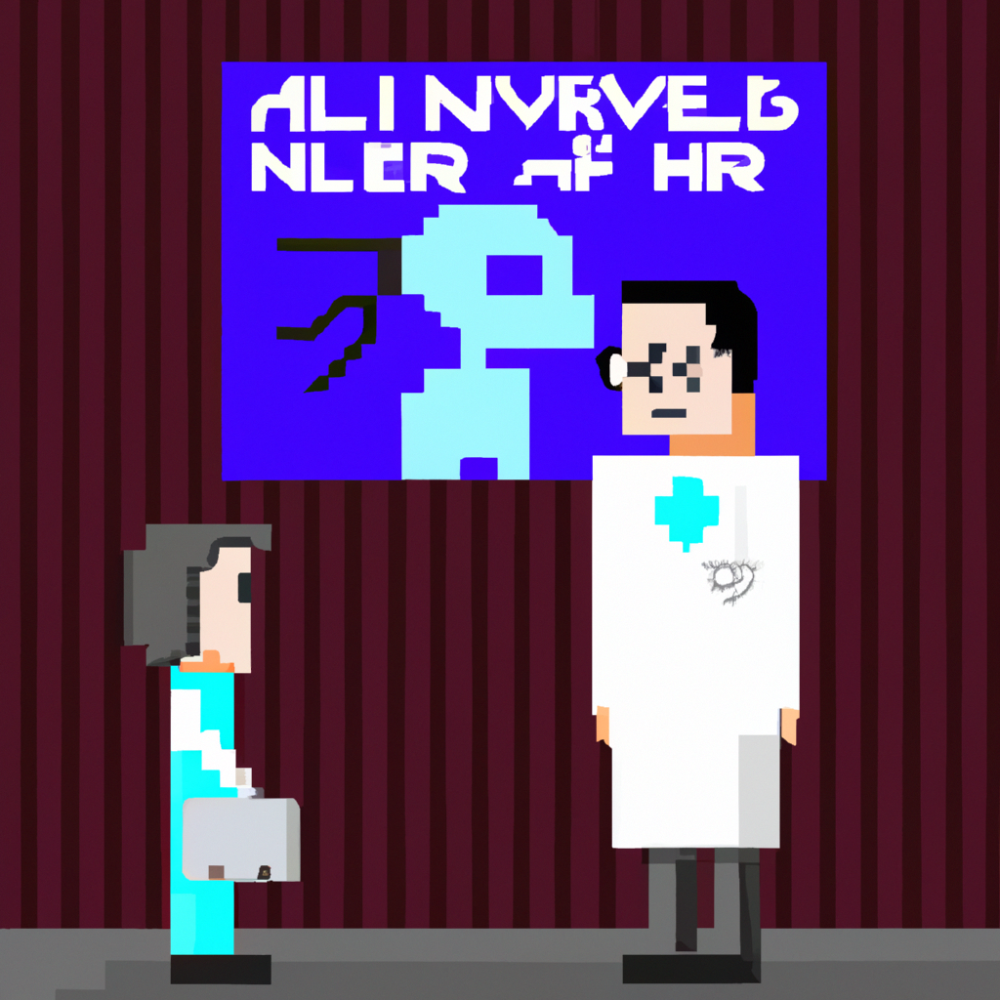

Why AI will never replace the radiologist
With the advancement of technology, many people think that AI will soon replace radiologists. However, this is simply not true. While AI has made strides in healthcare, it is still a long way from replacing the highly skilled radiologists.
AI can be used to assist radiologists in their work, but it will never be able to replace them. AI is simply not yet advanced enough to make decisions on its own and diagnose diseases accurately. AI can only assist the radiologist in providing an initial diagnosis, but it is the radiologist who must ultimately make the call.
Additionally, AI is only as good as the data it is given. AI relies on large datasets to learn from and the data available in radiology is limited. This means that AI is prone to making mistakes and radiologists must double check the AI's diagnosis.
AI also cannot replicate the human touch that radiologists provide. Radiologists are able to provide advice and guidance to patients and their families. This is something that AI simply cannot do.
In conclusion, while AI can help radiologists in their work, it will never replace them. AI is simply not advanced enough to make decisions on its own and diagnose diseases accurately. AI can only assist the radiologist in providing an initial diagnosis, but it is the radiologist who must ultimately make the call.